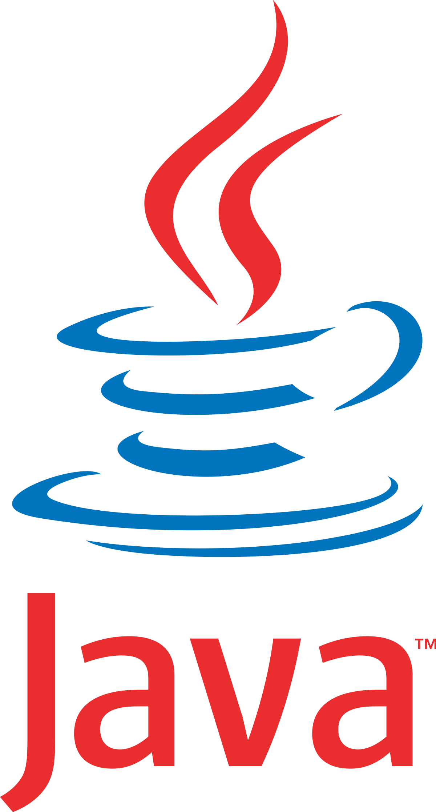
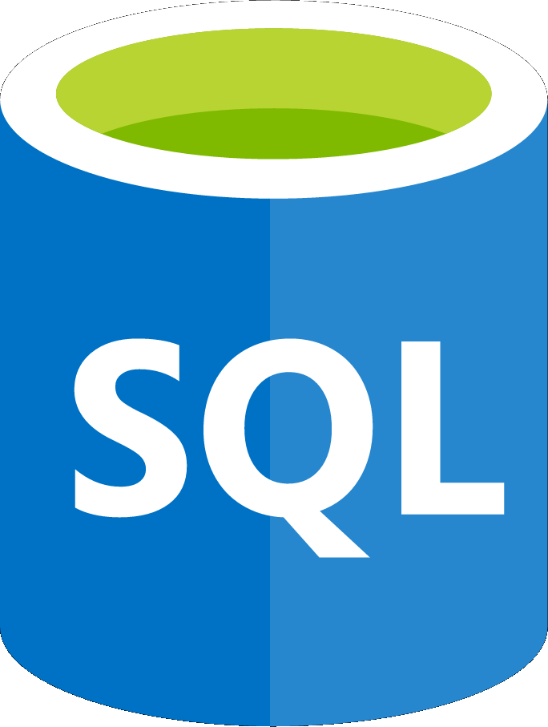
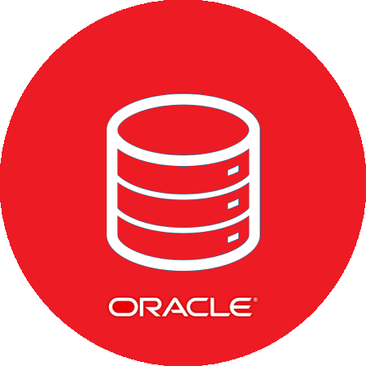
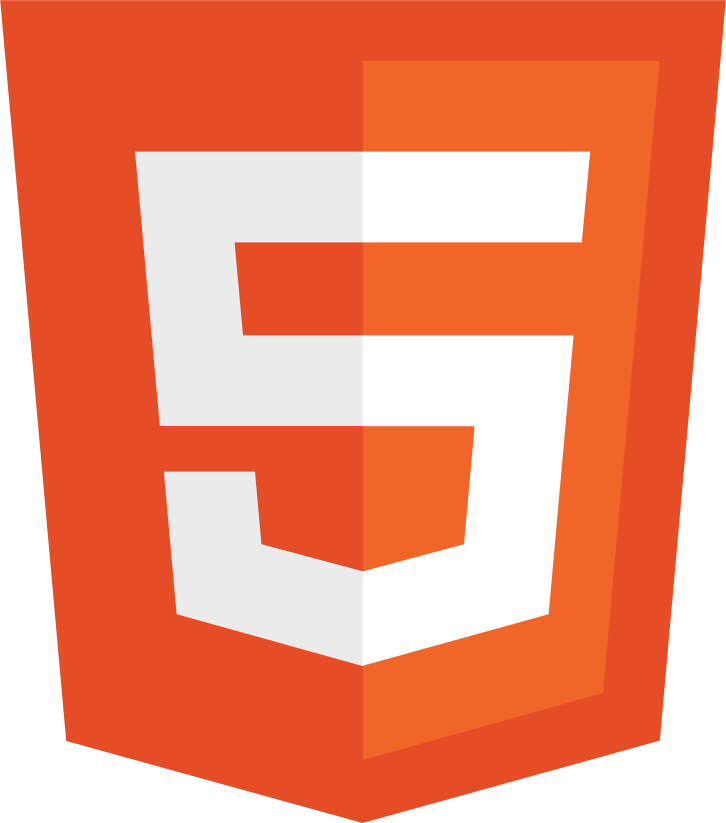
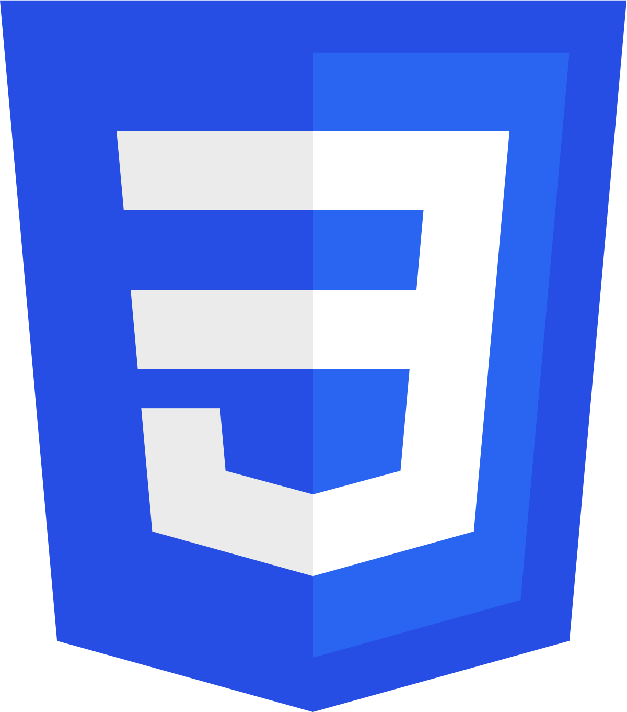
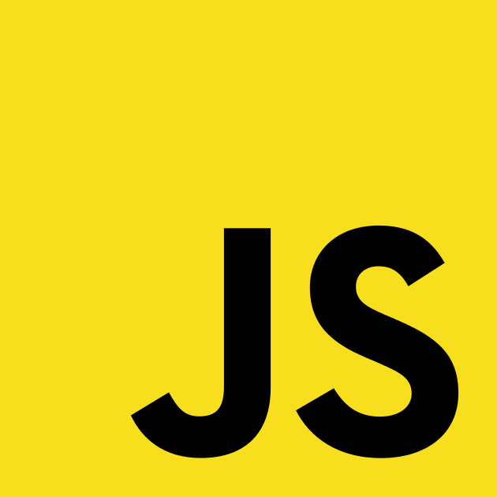
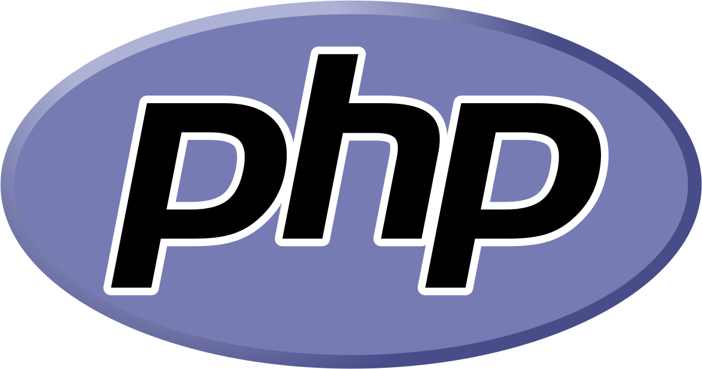
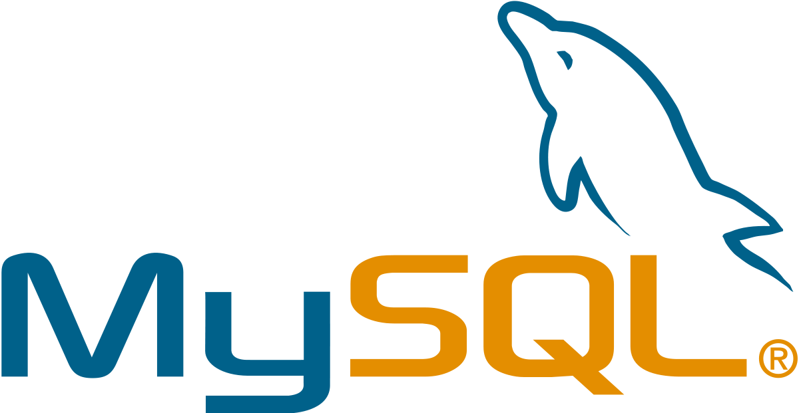
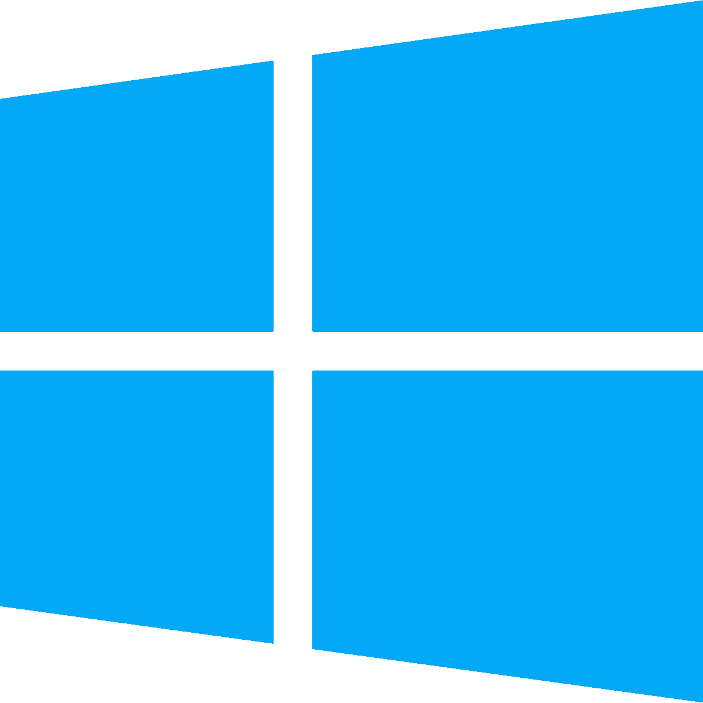

Aujourd'hui étudiant en deuxième année de DUT Informatique à l'IUT Paris Descartes, j'ai obtenu mon bac mention Bien (série Scientifique,
option Sciences de l'Ingénieur, spécialité Informatique et Sciences du Numérique) au lycée Charles de Gaulle de Poissy.
Mon intérêt pour l'informatique a débuté en classe de 4e où j'ai découvert les langages HTML et CSS de façon autonome, puis j'ai pu effectuer
mon stage d'observation de 3e au sein du service informatique d'AXA Corporate Solutions.
Pendant mes années lycée, j'ai été amené à réaliser différents projets (TPE, projet SI) dans lesquels j'ai développé des petits programmes informatiques. C'est
ainsi que j'ai réalisé des programmes pour Arduino en première et terminale. Ce sont à ces occasions que j'ai découvert implicitement le langage C. J'ai aussi
réalisé un projet en Python pour ma spécialité de terminale : il s'agissait d'une application permettant d'effectuer des tests psychotechniques.
Lors de mon cursus informatique, j'ai développé une appétence particulière pour les langages objets, notamment le Java que j'ai beaucoup pratiqué et pour lequel
nous avons approfondi ses notions de maintenabilité, d'évolutivité et de réflexivité. Par le biais du framework JEE, j'ai étudié les services web (servlets,
scriptlets) et les interactions avec les bases de données.
En début de première année, j'ai mis en pratique les langages C et C++ qui nous ont servi d'introduction à la programmation. Les systèmes de gestion de bases de
données, les commandes essentielles sous Linux, le web, le réseau, et l'architecture des ordinateurs ont également été des parts importantes de ma formation dans
le domaine informatique.
Ce parcours permet aussi d'aborder de nombreuses notions transverses : les mathématiques, l'anglais technique, la communication, l'expression, l'économie, la
gestion, la comptabilité, et le droit général et informatique.
Tous ces modules (aussi bien informatiques que transverses) ont donné lieu à des projets de groupe qui m'ont permis de développer ma capacité à travailler en
équipe, c'est-à-dire aussi bien pour la communication entre collègues que pour le respect des impératifs liés à un planning.
Certains de mes projets sont disponibles sur mon GitHub (voir partie Contact).
- [EN COURS] DUT Informatique
- [OBTENU - 2018] Baccalauréat Scientifique (mention Bien)
- [OBTENU - 2015] Brevet général et technologique (mention Très Bien)
| Java |  | Eclipse |  | ||
| Java EE | Apache Tomcat | ||||
| PL/SQL |  | Oracle 11g |  | ||
| HTML5 |  | CSS3 |  | JavaScript |  |
| PHP |  | MySQL |  | ||
| Windows 10 |  | Linux |  | ||
| Google Suite | Microsoft Office 365 |  |